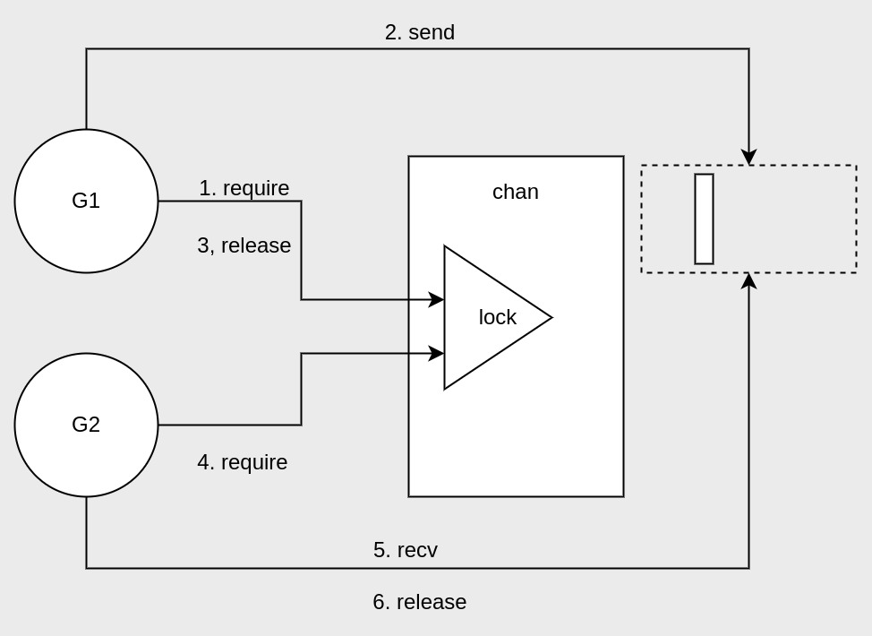
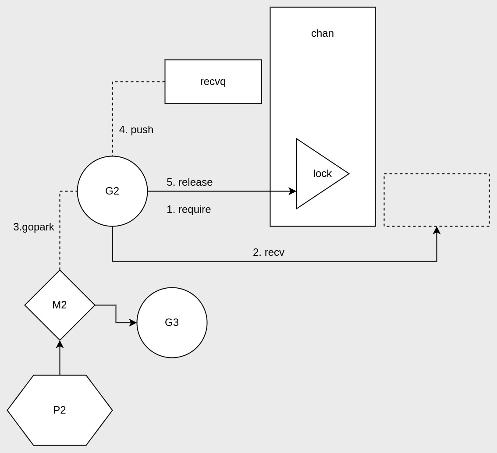
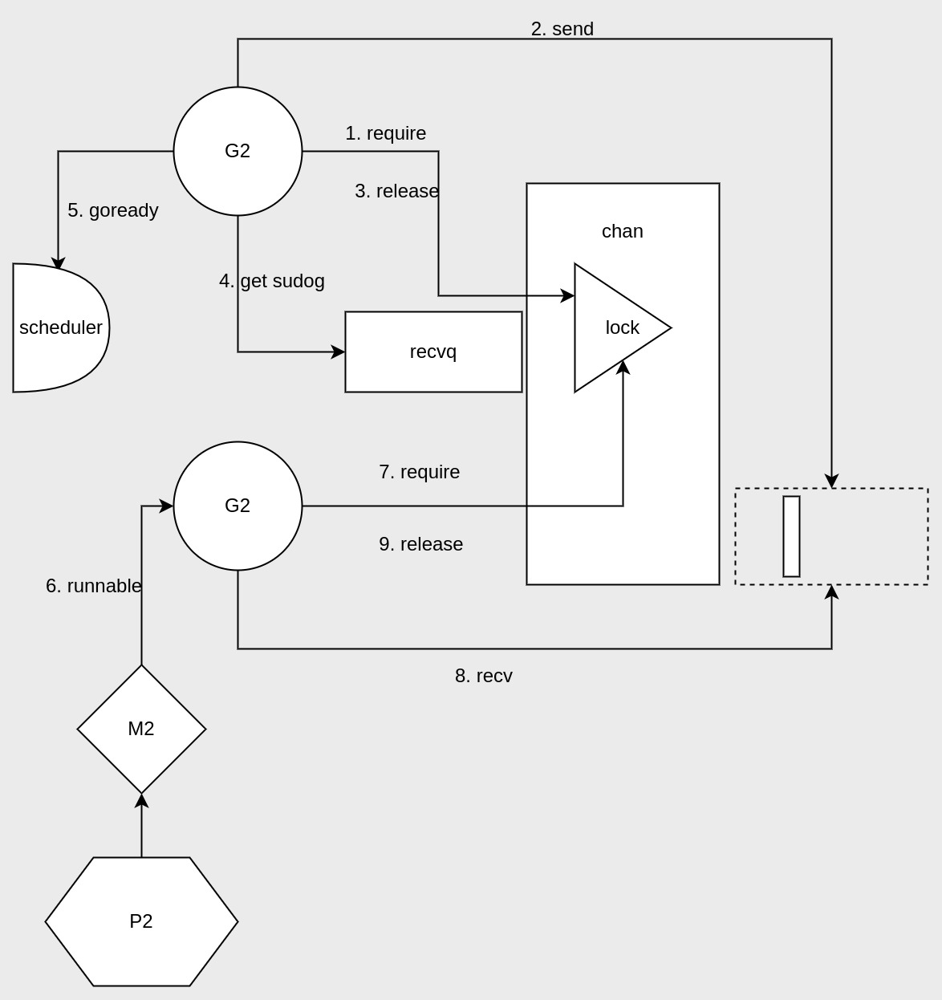
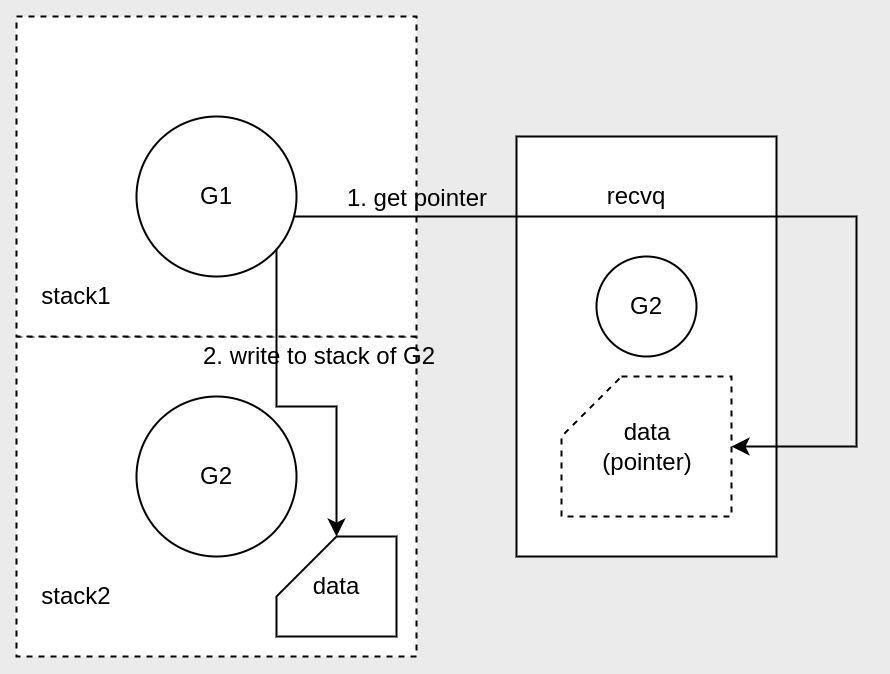

Understanding Go Channels
上次说到了channels使用的注意事项，这次来聊聊它的原理。
channels底层结构
channels在Go源码中是用结构体封装构建的，当make一个chan时，返回的是它的结构体指针。
1 | type hchan struct { |
核心字段的说明：
- buf是一个指向存储channels数组的指针；
- sendx, recvx分别是当前发送和接收所在的数组索引，索引到达末尾后又会重头开始，说明数组是环形的；
- lock是一个互斥锁，用于控制数组的读写并发，这也是chan具有goroutine安全特性的原因；
- recvq, sendq分别用于接收和发送者的等待队列；
发送／接收的流程
- 发送者G1先获取到chan的lock，
- Ｇ1往chan环形数据中放了数据；
- G1释放了chan的locak；
- 接收者G2需要从chan中拿数据，所以也要获取chan的lock；
- 然后G2从chan中读取了数据；
- G2读完数据后释放了chan的lock；
如果反过来是接收者G2先从空的chan尝试读数据呢？
这就需要说到接收和发送队列了。
chan如何导致goroutine阻塞的？
从空的chan中读数据
- 读数据的goroutine会被阻塞，具体是它调用了gopark将自己与线程M解绑，好让其与P中的其它goroutine绑定执行其它任务。
- 然后G2封装成sudog并放入recvq中。
如何从阻塞中恢复
得让chan有数据，然后被阻塞的接收者才能恢复。
- 发送者G1在发送完数据后，获取了recvq的sudog，并向scheduler发送了goready信号恢复G2的调度；
- G2这才会阻塞中恢复，并成功读取到数据。
同理，如果是在满了的chan中发数据，也会阻塞，恢复也需要靠接收者，只不过是把recvq换成sendq。
chan阻塞传输的性能优化
在阻塞后传输的过程中，chan做了点优化，减少数据的拷贝消耗，特别是在无缓冲chan上，可以完全避免chan数组的数据拷贝。
跨goroutine栈的读写
这个就是优化的手段了。具体实现如下：
